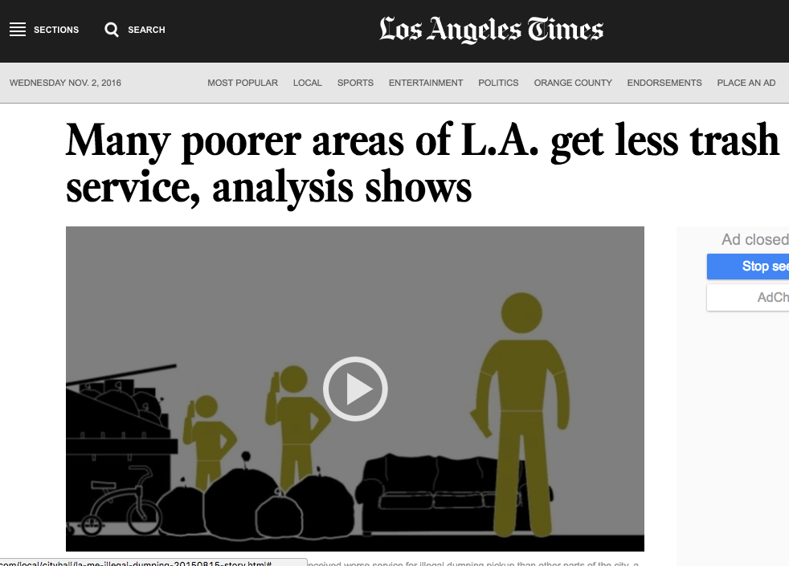

Collaborating within
(and across) Smart Cities
w/
@geogangster
&
@vyki_e
lets get in the mood
we still need to improve
intra-
agency communication
'how', not 'why'
(our case study: LA)
the pothole mayor

disparate GIS >
Open Data >
GeoHub
beating FUD
open data with a
purpose
image credits:
http://www.easeus.com/resource/drive/floppy-drive.htm
© EaseUS
http://www.123rf.com/photo_48042869
© franzidraws
http://www.latimes.com/local/cityhall/la-me-illegal-dumping-20150815-story.html